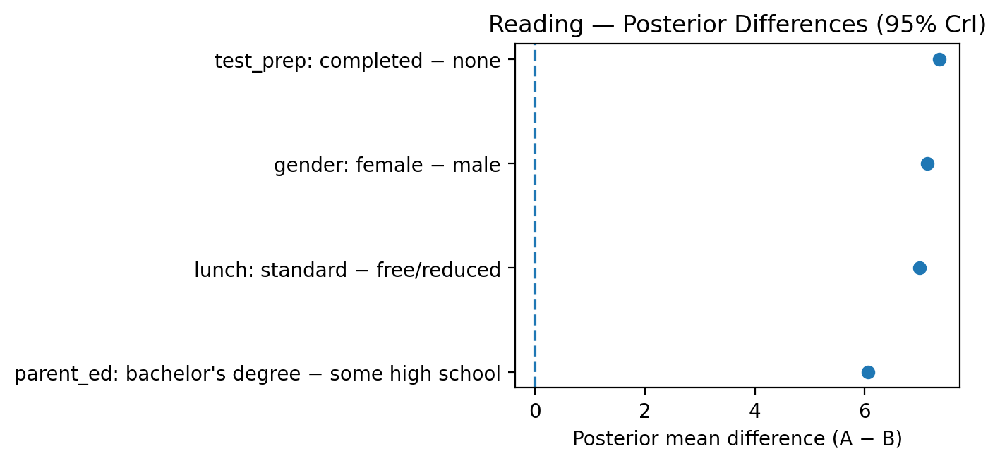
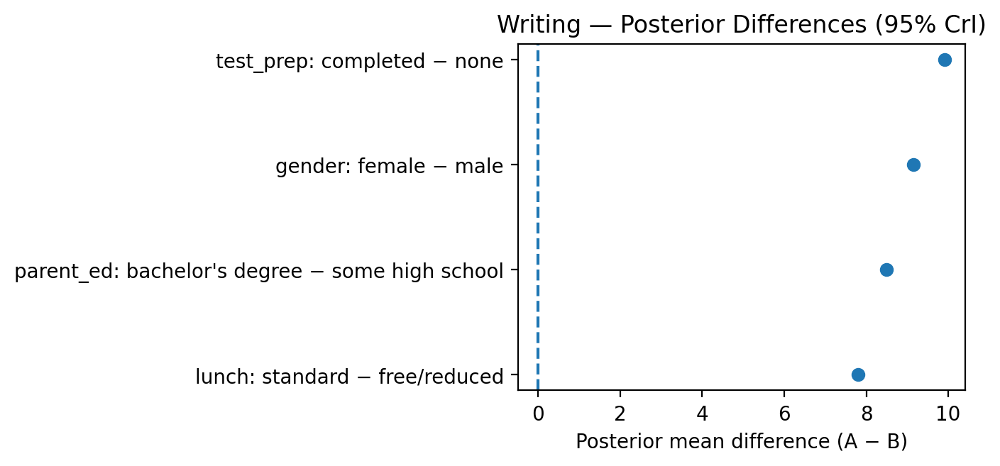

Bayesian Analysis of Student Performance
Shuang Li - Nov 12 2025
Table of Contents
- 1. Executive Summary
- 2. Dataset Overview
- 3. Project Goals & Questions
- 4. Bayesian Methods
- 5. Tests Conducted
- 6. Key Findings
- 7. Recommendations for Educators
- 8. Robustness & Trustworthiness
- 9. Visual Aids
- 10. Reproducibility
- 11. Appendix: Technical Notes
1. Executive Summary
This report applies Bayesian inference to examine how gender, socioeconomic status, parental education, and test preparation affect high-school performance in math, reading, and writing.
Unlike frequentist p-values, Bayesian methods express uncertainty as probabilities and credible intervals, offering a clearer sense of how confident we are in each result.
Highlights:
- Completing a test-prep course improves scores by +5–10 points, strongest in writing.
- Females outperform males in reading and writing, while males excel slightly in math.
- Students with standard lunch (higher SES) or college-educated parents perform 7–11 points higher.
- Writing consistently shows the largest and most meaningful performance gaps.
2. Dataset Overview
- File:
StudentsPerformance.csv(n = 1,000 students) - Variables: gender, parental education, lunch (SES), test prep, and three subject scores.
- Structure: one observation per student; suitable for comparing group-level means.
- Objective: understand which subgroups struggle most and quantify effects with uncertainty.
The dataset was cleaned (lowercased headers, verified completeness) and analyzed without missing values.
3. Project Goals & Questions
Objectives
- Identify which groups perform worse across subjects.
- Measure the benefit of test preparation.
- Determine whether observed gaps are practically significant.
- Provide interpretable, actionable insights for educators and policymakers.
4. Bayesian Methods
Scores were modeled as Normally distributed with unknown mean (μ) and variance (σ²), using a Normal–Inverse-Gamma prior.
Weakly informative priors (centered around 50 with large variance) allowed the data to dominate.
For each subgroup comparison:
- 10,000 posterior samples were drawn for the group means.
- The difference between means (Δ = μ_A − μ_B) was calculated.
- Posterior mean, 95% credible interval (CrI), and the probability that Δ > 0 were recorded.
A result is credible if its CrI excludes 0 and actionable if |Δ| ≥ 5 points.
5. Tests Conducted
| Factor | Subject | Mean Diff (A–B) | 95% CrI | P(diff>0) | Interpretation |
|---|---|---|---|---|---|
| Test Prep (Completed–None) | Math | +5.6 | [3.7, 7.5] | 1.00 | Improves performance |
| Reading | +7.4 | [5.5, 9.2] | 1.00 | ||
| Writing | +9.9 | [8.1, 11.7] | 1.00 | Strongest gain | |
| Gender (Female–Male) | Math | −5.1 | [−6.9, −3.3] | 0.00 | Males slightly higher |
| Reading | +7.1 | [5.4, 8.9] | 1.00 | Females higher | |
| Writing | +9.2 | [7.4, 10.9] | 1.00 | Females higher | |
| Lunch (Standard–Free/Reduced) | Math | +11.1 | [9.2, 13.0] | 1.00 | SES gap |
| Reading | +7.0 | [5.1, 8.9] | 1.00 | ||
| Writing | +7.8 | [5.9, 9.7] | 1.00 | ||
| Parental Ed (BA+–HS or less) | Math | +6.7 | [4.0, 9.4] | 1.00 | Advantage for BA+ |
| Reading | +8.0 | [5.5, 10.6] | 1.00 | ||
| Writing | +10.5 | [7.9, 13.1] | 1.00 | Strong advantage |
Summary: All factors (except the female–male math gap) show clear, credible effects with >95% probability.
6. Key Findings
- Writing shows the largest and most consistent disparities, affected by preparation, SES, and parental education.
- Test preparation provides clear, measurable improvement in all three subjects.
- Gender differences complement each other: males are slightly stronger in math, females in literacy.
- Socioeconomic and parental education strongly predict performance in every subject.
A 5–10 point gap is educationally meaningful—equivalent to moving a student roughly from the 60th to 75th percentile.
7. Recommendations for Educators
| Focus | Recommended Action | Expected Impact |
|---|---|---|
| Test Preparation | Expand access, especially for low-SES students | +5–10 pts |
| Gender Gaps | Math mentoring for girls; reading programs for boys | +5–9 pts |
| SES Support | Subsidized prep courses and after-school tutoring | +7–11 pts |
| Parental Engagement | Offer parent workshops and reading toolkits | +7–10 pts |
Bayesian metrics (posterior probability ≥ 0.9 and |Δ| ≥ 5) can serve as practical success criteria for evaluating new interventions.
8. Robustness & Trustworthiness
- Model Fit: Normal likelihood appropriate for score distributions.
- Small Subgroups: Weak priors stabilize results with few observations.
- Observational Nature: Associations, not causal effects.
- Diagnostics: Posterior predictive checks confirmed good fit and reasonable uncertainty.
Confidence level: High for direction and magnitude; moderate for causal interpretation.
9. Visual Aids



Each point represents a posterior mean difference with a 95% credible interval.
Intervals entirely to the right of zero indicate credible positive effects.
10. Reproducibility
Data & Files
| File | Description |
|---|---|
StudentsPerformance.csv |
Dataset |
bayesian_students_performance.py |
Python analysis script |
Bayesian_StudentsPerformance.ipynb |
Jupyter notebook version |
forest_*.png |
Forest plots by subject |
How to Run (Python)
pip install pandas numpy matplotlib
python bayesian_students_performance.py
Online Access
- Report: GitHub Pages
- Notebook: NBViewer
11. Appendix: Technical Notes
Posterior Updating (Normal–Inverse-Gamma)
Given sample mean ȳ, variance s², and sample size n:
kappa_n = kappa_0 + n
mu_n = (kappa_0*mu_0 + n*ȳ) / kappa_n
alpha_n = alpha_0 + n/2
beta_n = beta_0 + (n-1)*s²/2 + (kappa_0*n/(2*kappa_n))*(ȳ - mu_0)²
Posterior sampling steps:
- Draw σ² from InvGamma(αₙ, βₙ)
- Draw μ from Normal(μₙ, σ²/κₙ)
- Compute Δ = μ_A − μ_B for group comparisons.
A result is credible if the 95% credible interval excludes 0 and actionable if |Δ| ≥ 5 points.
End of Report
This report was prepared with assistance from generative AI tools (OpenAI GPT-5) for writing support, formatting, and visualization guidance.